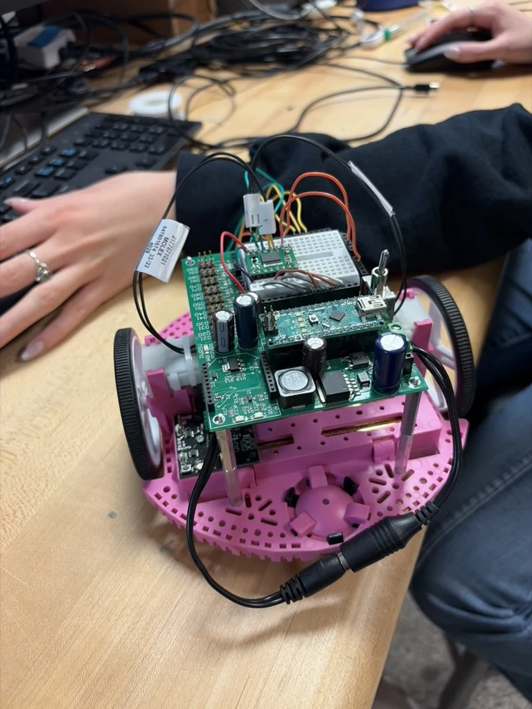
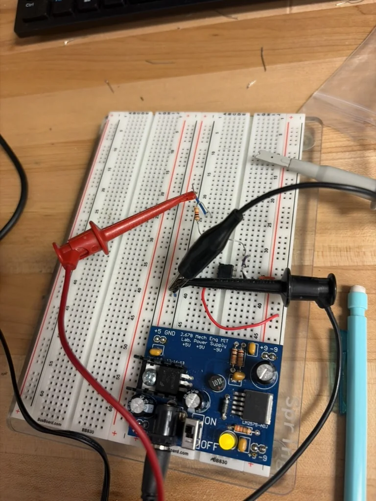

Building a line-following robot
Using black-versus-white sensor readings and decision thresholds to keep a robot on course through turns and tight corners.

Close-up of the completed line-following robot, showing the electronics and sensor layout · Click image to enlarge
The goal
Our class project was to make a robot follow a dark line through a course using a simple sensing and control strategy. We needed the robot to recognize when it was leaving the line and respond quickly enough to stay on track.
Sensing and control logic
We used left, center, and right sensors to distinguish black from white. We set detection thresholds and corresponding actions for situations where different sensors were no longer positioned above the line. Those cases formed the robot's basic decision logic.
How it performed
Our robot completed the course with very little intervention. It was especially effective on circular sections and tight corners. Seeing the assembled robot respond to sensor measurements was one of my favorite demonstrations of how mechanical systems and simple embedded logic work together.
Related coursework
The course also included electronics work, including a speaker lab and circuit testing. I have included a representative setup image below as supporting context rather than claiming it is part of the line-following mechanism.
Project imagery
